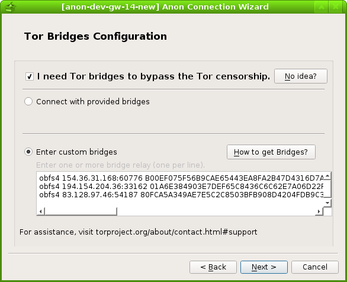

New paper on Tor launcher usability/recommendations in PETS 17
2 Likes
Hi HulaHoop!
Thank you very much for keeping me updated to the new UX research on Tor launcher.
Linda’s paper is inspiring. I have had several thoughts in my mind on how to improve the UX of the current anon-connection-wizard. I hope I can implement those thoughts as soon as possible so that anon-connection-wizard will not block the release of Whonix14. 
Some thoughts:
-
I am thinking about switching the current torrc_page to the one shown in Linda’s paper (Fig4 g, which is on page 8).
-
I also kind of like the “process bar” in Linda’s paper indicating which page users are at and how many configuration have been or will be done. This will give a user a general feeling on how much work they have done/will do, which may reduce their uncertainty on how much options do they still have to choose and let them have a general impact on what anon-connection-wizard can help them do.
-
I also kind of like the idea shown in the paper that further options will show up in the same page right after a checkbox is clicked. However, this feature cost almost a redesign of anon-connection-wizard and may not improve the usability that much so let’s set the priority as low.
-
The instructions on description and options in anon-connection-wizard should also be improved. Small work but big improvement, so I will set the priority as high.
2 Likes
TODO:
- BUG: /etc/tor/torrc is accumulate /n due to a not proper implementation
- add more detailed instructions to the censorship circumvention help page, integrating the instructions in whonix-setup-wizard
- ask if a cli version of anon-connection-wizard is a good idea.
- merge whonixsetup(cli) into anon-connection-wizard
1 Like
whonix-setup-wizard incudes several different options:
setup, quick, repository, locale_settings.
When we talk about integrating tor-conncetion-wizard with whonix-setup-wizard, do we mean replacing the old setup and quick options with the tor-conncetion-wizard?
It seems whonix-setup-wizard is more than displaying disclaimers and providing an entry to tor-conncetion-wizard, which means abandoning it will also abandon repository, locale_settings options?
Yes, it is hard since cli is written in bash.
Do you think it will be a good idea to write a python-based cli which supports bridge and proxy settings? It seems to be easy at the first glance:
- share code base with the current GUI one
- input can be simply taken by
input()function in Python3
It will be something like:
Please choose options by inputing 1-4:
1) Conncet
2) Configure
3) Disable Tor
4) Quit
Could you please share your insights on the questions? @Patrick @JasonJAyalaP
I really appreciate your help!
1 Like
True. locale_settings is in limbo.
Yes.
True.
Disclaimer can be abandoned for next release. So let’s keep only repository.
In theory, that seems nice-to-have. In practice… Priority change. Pretty low priority. I recommend not to spend time on it. You probably have you hands full with tor-connection-wizard gui?
Unfortunately, due to personal reasons, I cannot spend as much time on Whonix as I used to spend. Whonix 14 release which includes port to Debian stretch / Qubes 4.0 lags far behind. We need more focus and help with Whonix core development. I’ll announce this in the coming days.
1 Like
I understand.
I agree with you.
I really enjoyed the Whonx development process. And I will stay around after the end of GSoC.
I am looking forward to a further discussion on the future development of Whonix! 
1 Like
Tor UX team’s final redesign of the Tor launcher.
It contains a wizard page where user can get latest Tor bridges by finishing a challenge-response test. However, this means a clear net connection to the BridgeDB server. I am not sure whether this behavior will harm the anonymity and will be allowed in a anonymity-focused distribution.
Other features are fortunately implemented in the latest anon-connection-wizard.
I like the idea that explicitly tell users if you are living in country A, B or C, you need to configure obfs4 etc. I will add the instructions to anon-connection-wizard soon
1 Like
That’s great to hear!
If Tor Project thinks that’s alright… Let’s follow their turn.
To access clearnet on Whonix-Gateway…
sudo -u clearnet some-cmd-here
We could either run a script under user clearnet (preferable) or whole tor-connection-wizard under user clearnet (more risky - in case of clicking links in the gui, we don’t want some [yet to be developed] operating system standard feature to open a remote website).
The only Whonix specific piece would be:
- run the clearnet script direclty vs
- Whonix specific
sudo -u clearnet cmd
Does that sound viable?
1 Like
Agreed. Thank you for your instructions, Patrick! I will be working on this feature. But I will set the priority as low before the feature is really implemented in Tor launcher.
Btw, I remember that a new API was developed in BridgeDB, which I will check if it is helpful when interacting with the BridgeDB server.
1 Like
anon-connection-wizard is using bridges_default file to ship the default bridges.
The default bridge used by anon-connection-wizard should be exactly the same bridges contained in bridge_prefs.js shipped with the latest TBB. This is because:
- the servers hosting default bridges are set up for huge amount of traffic;
- the servers hosting default bridges are probably audited by TPO for better security;
- using a different set of bridges will distinguish the anon-connection-wizard bridge users from the TBB bridge users, which compromises their anonymity.
We need a mechanism to synchronize the latest bridge_prefs.js. The following are two ways:
- Create a mechanism that automatically convert the
bridge_prefs.jsto the current bridges_default formatt. Then ship thebridges_defaultfile; - Modify the current bridge parser to be able to extra the bridges from
bridge_prefs.js. Then ship thebridge_prefs.jsfile.
The first solution grantees the bridges_default file shipped to users will work. The difficulty of it will be the implementation of almost full automatic mechanism. (Otherwise, it will be pretty time/effort consuming to detect/extra/update the bridge information manually every time.)
The second solution will heavily relies on the format of bridge_prefs.js file which is controlled by TPO, not Whonix. Maybe a well written RE will be fine to adapt minor changes, however, the risk of be broken after a automatic update can not be eliminated.
1 Like
Is it possible or a good idea to include bridge_prefs.js in Debian tor package? I guess not.
1 Like
Worth suggesting to ship some default bridges also with the Debian tor package.
How often does it change? In this quickly evolving field, perhaps better to keep manual? Otherwise, could you please ask what they think how stable the format will be?
2 Likes
Thank you very much for your instructions, Patrick!
I will be working on these two problem!
2 Likes
The development progress of the BridgeDB API can be found here:
https://trac.torproject.org/projects/tor/ticket/15967
Feature request on Debian BTS: https://bugs.debian.org/cgi-bin/bugreport.cgi?bug=872456
Feature request on tor-dev@: https://lists.torproject.org/pipermail/tor-dev/2017-August/012399.html
1 Like
I will strip the bridges out manually currently. And perhaps write a RE filter script to help me with that.
1 Like
David Fifield answered on the tor-dev@:
To get an idea of how frequently the list of default bridges has
changed, see the tbb-bridges keyword in the bug tracker:
https://trac.torproject.org/projects/tor/query?keywords=~tbb-bridges&col=time&col=id&col=summary&col=keywords&col=status&desc=1&order=time
The frequency is generally once per month while sometime three times a month.
This RSS feed may be helpful to immediately inform us the new changes.
1 Like
I apologize that I did not follow up with this.
I am doing the final evaluation of GSoC which requires:
As part of the final evaluation, all participating students must provide a link to the work they have done for the program.
And:
You should share your link with your mentor BEFORE submitting your evaluation to make sure it’s okay.
How do you like the following process, @Patrick ?
- I write down a post below introducing the GSoC anon-connection-wizard project;
- I post it on Whonix blog after your review and maybe some revision;
- I use the URL to the Whonix blog post as the final evaluation link.
Thank you very much for your time!
1 Like
GSoC with Tor and Whonix: Anon-Connection-Wizard
Hello everyone! I am iry.
As some of you have noticed, I have been working on an application called anon-connection-wizard as a Google Summer of Code(GSoC) project this year.
I was under the mentor and help of the Whonix core developer @Patrick, and so many other enthusiastic developers including but are not limited to @JasonJAyalaP , joysn1980, @HulaHoop from Whonix, and Sukhbir (sukhe) from the Tor project. I would like to say thank you to everyone who has helped me from my heart. Within such a supportive community, I enjoyed the development process so much that I kept experiencing flows.
This post, presenting in a Q&A form, is an introduction to the anon-connection-wizard which will be shipped with the upcoming Whonix 14! It is also a summary of the work I have done and the tasks I will be working on.
Q: What is anon-connection-wizard?
A: anon-connection-wizard is a python-based application that help users in different Internet environment connect to the Tor network. The followings are some screenshots of it which provides you with some visual impression on it:





Q: How does anon-connection-wizard work?
A: It will firstly ask users questions about their network environment, like whether they live in censored areas. And then, it will generate a .torrc file with the most suitable Tor configurations according to the answers from users.
Q: Isn’t it very similar to the Tor-launcher shipped with Tor Browser Bundle?
A: Yes, it does share several similar functions with the current Tor-launcher. I have been considering Tor-launcher as the upstream of anon-connection-wizard and trying to closely keep up and collaborate with their development.
Q: Why do we need anon-connection-wizard when we have already had Tor-launcher?
A: Because these two applications have very different use cases. Currently, the implementation of Tor-launcher heavily relies on the Tor Browser(which is based on Firefox). However, a Tor user does not necessarily be a Tor Browser Bundle user. There are still a large number of people I call system Tor users who would like to run core Tor with different torified applications. And these people (yes, you are one of them if you use Whonix!) may prefer anon-connection-wizard because it does not rely on Tor browser and all its dependencies have already been packaged into Debian.
Q: What works have you done during the summer?
A: anon-connection-wizard was originally developed by @troubadour as part of the Whonix Project. Some of the screenshots of its old version can be found in this Whonix blog post. In March, I completed the basic function and ported it from Python2 to Python3, from PyQt4 to PyQt5. During the summer, I made a huge amount of improvement and changes, which include:
- Completely redesign anon-connection-wizard UI basing on Linda’s PET paper and Tor UX team’s proposal to new Tor-launcher.
- Add a torrc page in anon-connection-wizard that allows users have an overview before connecting to the Tor network
- Add serveral help buttons with detailed instructions to help users make decision
- User input validation check
- Let anon-connection-wizard remember user’s last time settings
- Create a torrc_repair script that tries to fix corrupted .torrc files
- Improve and add features to the tor_status.py
- torrc.d feature request against Debian Tor package
- Switch from overwriting .torrc approach to edit-mark approach, and then to torrc.d approach
- Shipping default Tor bridges request
- Update default provided Tor bridges
All my commits in the summer can be found in this pull request which has been merged into the Whonix repository.
I also wrote bi-week reports to @tor-project mailing list, which have been recorded on GSoC page in Tor wiki.
Q: What is your next step on anon-connection-wizard?
A: I will still be working on my Github repository and the following features will be implemented in the near future :
- implement bridges information validity check by RE or Tor ERROR complaints
- merge whonixsetup(cli) into anon-connection-wizard
- integrate whonix-setup-wizard with anon-connection-wizard
- implement bridge request via anon-connection-wizard once BridgeDB API is finished #15967
Q: What are you going to do in the future development?
A: The future goal of anon-connection-wizard is to be packaged as a generic standalone application into Debian so that it can be used by different anonymity focused distributions like Whonix and Tails. In order to achieve it, the following works need to be done:
- package anon-connection-wizard as .deb
- make anon-connection-wizard translatable
- get anon-connection-wizard translated into different languages
- after doing all the steps above, check if it can be helpful for Tails
What’s more, Tails developer anonym pointed out a promising future for the anon-connection-wizard on the tor-dev mailing list:
Any way, I also see potential for future collaboration between Whonix and Tails for extending the usefulness of anon-connection-wizard beyond what Tor Launcher (and its replacement) offers [2]; anon-connection-wizard targets the OS, not just a single application, so it could integrate the choices of network configuration (wired? which wireless network? MAC spoofing?) and Tor configuration (proxy? pluggable transport?) in a single place which probably makes more sense for users and also allows us to more easily (optionally) save these settings so they are restored the next time you visit the same network. This could potentially even be used to help giving users control over entry node selection to avoid persistent Entry Guards from leaking information about you geographical movement. [3]
Q: Can I get involved into the development of anon-connection-wizard, too?
A: Absolutely! Please let me say thank you for your interest in anon-connection-wizard! I was trying to keep most of my development communication public so that people like you can have a clear idea on how all the developing decisions have been made and how we have been communicating and cooperating with each other. Most of the discussions happened in these two places and a simple “hi, I think maybe I can help with…” is just enough to join us:
- [graphical gui] Whonix Setup Wizard / Anon Connection Wizard - Technical Discussion
- review and merge anon-connection-wizard pull request by iry
Note that offering feedback, testing, developing, packaging, porting and translating are all ways to contribute and will all be welcomed!
Q: What other work have you done during the summer?
A: Like what I said in my GSoC proposal:
I never consider my project as a one-time project. Instead, I consider it as an important step to help myself get more involved in the Tor/Whonix community.
I was trying to jump into and follow up many different parts of the Tor and Whonix community. For those who may be interested, here are some links:
2 Likes